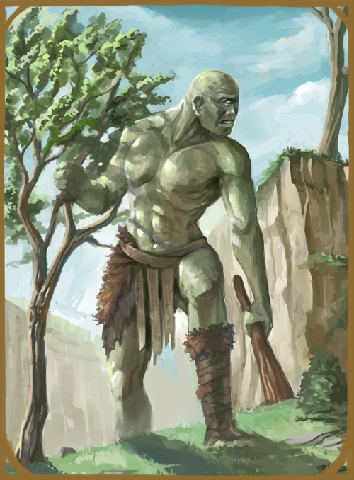

CYCLOPS
LARGE HUMANOID

One-eyed humanoid giants, cyclopes are mostly found upon an island to the south
of eastern karthia, roaming the ruins of their once great culture. While there are a few
that have moved onto the mainland, they are rare encounters, and generally are
willing to let adventurers that happen upon them pass if tributed with enough food.
A spark of the civility they once had millenia ago. When angered, or their dwellings
tresspassed upon, then they fly into a rage that cannot be quelled until everything
before them is killed.
CYCLOPS CULTURE
Cyclopes live in tribal villages built upon the ruins of the elder selves. Once known
for their incredible crafts and detailed architechture and weaponry, after the
conflicts amongst themselves and the fall of their civilization,
they now barely build huts of wood, stone and straw. Barely functioning crops are grown
in their outskrits and they mostly rely on hunting to sustain themselves. Distrusting
of any outsiders, their trade is also very limited, especially due to the superstition that
most outsiders only want the elder secrets from the height of their civilization locked
away below. Once in a while, a tribe will leave the island of Cro-agol and find their
way upon Karthia, where they will destroy any settlement in what they now consider their
territory.
CYCLOPS RELIGION
Cyclopes are superstitious, worshipping the spirits of the departed anlongside the many
gods that govern most things. Once upon a time, they had worshipped a great creator and
builder, but that was when they still had their knowledge and intellect. Statues of this
unnamed God still litter the ruins, but none know his name anymore. Cyclopes are split upon
this deity, some thinking him a destructive god who destroyed all the cyclopes once had,
other believing that it was due to the cyclopes' forgetting him that he had cursed them
and that upon remembering his name, they will also remember how to forge and craft once
more.
CYCLOPS DIMORPHISMS
The male and female of the cyclopes species are similar to humanity in their bodily
differences. Males are of stronger and larger build,
while females are thinner and smaller. Beyond this, they are very
much alike in their mind and abilities.
OGRE STATISTICS
ADULT MALE
GENERAL ATTRIBUTES
| AGE | HEIGHT | SIZE | SIGHT |
| 18-55 | ~14'03'' | Large - 3x3 | -/5/0 |
MOVEMENT
| RUNNING | CLIMBING | SWIMMING | FLYING |
| 7 - Perfect | 3 - Good | 2 - Rough | - |
ABILITY SCORES
| STR | VIT | CON | AGI | DEX | INS | INT | WILL | WIS | CHA | BEA |
| 16 | 20 | 7 | 6 | 5 | 5 | 5 | 9 | 5 | 4 | 5 |
COMBAT ABILITY
| WOUNDS | INITIATIVE | ATTACK (MELEE) | ATTACK (RANGED) | MIGHT |
| 20 | 11 | 5 | 5 | 16 |
| DODGE | PARRY | DAMAGE | NAT. ARMOUR | PRESENCE (POWER) | PRESENCE (BEAUTY) |
| 5 | 6 | 5 | 5 | 15 | 7 |
NATURAL WEAPONS
| WEAPON | TYPE | MIGHT | DAMAGE | ADDITIONAL |
| Hands | Primary | +0 | +0 | - |
ADULT FEMALE
GENERAL ATTRIBUTES
| AGE | HEIGHT | SIZE | SIGHT |
| 19-60 | ~13'06'' | Large - 3x3 | -/5/0 |
MOVEMENT
| RUNNING | CLIMBING | SWIMMING | FLYING |
| 7 - Perfect | 3 - Good | 2 - Rough | - |
ABILITY SCORES
| STR | VIT | CON | AGI | DEX | INS | INT | WILL | WIS | CHA | BEA |
| 15 | 18 | 7 | 6 | 5 | 5 | 5 | 9 | 5 | 4 | 5 |
COMBAT ABILITY
| WOUNDS | INITIATIVE | ATTACK (MELEE) | ATTACK (RANGED) | MIGHT |
| 18 | 11 | 5 | 5 | 15 |
| DODGE | PARRY | DAMAGE | NAT. ARMOUR | PRESENCE (POWER) | PRESENCE (BEAUTY) |
| 5 | 6 | 5 | 4 | 14 | 7 |